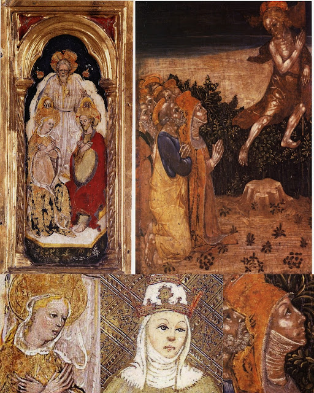
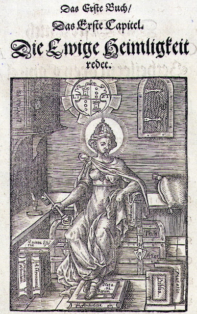

Popess/High Priestess
Introductory note, March 2018: A version of this post, but without images, appears in the journal Numen Naturae, ed. Casandra Johns, late 2018 (http://www.houseofhands.net). The few words that appear in bold below (except in section headings or when stated otherwise) are references for three of the images posted here.
Introduction
The Tarot card now often known as the High Priestess has gone through many changes over the years, even its name. In the first known list of Tarot subjects, by an anonymous late 15th century preacher in the Ferrara region of Italy, she was “La Papessa”; the most common name by which she would be known for the next 300 years. The preacher declared (1)
La papessa - (O miseri quod negat Christiana fides & ...)
The popess – (O wretches, which the Christian Faith denies... [or, “O miserable ones, because she refuses the Christian faith...,” or “O wretches, because the Christian faith refuses...”]The line is not entirely clear, in part because it ends with the sign for “etc.,” followed by a few more letters that no one has seen fit to decipher. Also, the word “quod” can mean “because” as well as “which.” The preacher is most likely saying that the Christian faith denies the validity of such a title. But he might be saying that the Christian faith refuses salvation to a woman who pretends to such a title, and all who honor her. Or, quite differently (but less likely), that the card represents the Christian Faith, which refuses something, such as card-playing, which makes people wretched.
Although it is not known precisely what the original card looked like, most of those that have come down to us show her in a two or three tiered papal tiara, dressed in clerical garb, usually with a book, sometimes with a staff. So what would have come to someone's mind, seeing such a card, knowing it was called "The Popess"?
“Pope Joan” and Pope-elect Manfreda
Let us start on the most literal level. There were two female personages to whom the epithet of “Pope” in the feminine gender was in fact applied, one fictional and known to many, the other real and known only to a very few.
The well-known but fictional popess was “Pope" Joan, called “Papissa” in Latin (2). In the medieval legend, believed as fact by many, she had first presented herself as a man in order to be able to attend school and university. Still disguised as a man, she won fame as a wise and erudite lecturer. As the Florentine poet Boccaccio told the tale, God tolerated her success at first. But then she accepted an offer to become Pope and won renown in that position. Tarotpedia points to one sentence in particular in Boccaccio’s account that the preacher seems to echo (3)
Que tamen non verita ascendere Piscatoris cathedram et sacra ministeria omnia, nulli mulierum a christiana religione concessum, tractare agere at aliss exhibere.The part in bold seems close to the preacher’s language. So, to continue the story, in God’s eyes she had gone too far. God inflamed her with passion for a lover by whom she became pregnant. She gave birth during a procession, thereby revealing her true gender. Naturally she and the child were killed on the spot by the outraged faithful.
(This woman was not afraid to mount the Fisherman's throne, to perform all the sacred offices, and to administer them to others, something that the Christian religion does not permit any woman to do.)
That the card was associated to this legendary personage is suggested also in Pietro Aretino’s satirical dialog Le Carte Parlante (The talking cards), 1643. The cards explain to the card maker, in a series of witty characterizations of each of them (4):
La papessa è per l’astuzia di quegli che defraudano il nostro essere con le falsità che ci falsificano.
(The Popess is for the shrewdness of those who defraud our being with falsehoods that falsify us.)A lady Pope was for the Church a false Pope, thus one whose actions, through their false sanctification, demeaned the very rituals designed to secure our immortal souls.

What was Manfreda’s great crime? In the 17th century, an abridged version of the trial minutes was found in a grocery shop in the town of Pavia, the second capital of the Visconti and their Sforza successors (8). Pavia was also the seat of the Visconti Library, where such a document likely would have been kept, at least until the French conquered Milan in 1500 and shipped the whole library to Paris. In these minutes there is testimony—whether true or false we don’t know, since torture was permitted—that she had told the group around her that in dreams or visions a saintly laywoman named Guglielma, then deceased, had confirmed Manfreda’s belief that she was the Holy Spirit, conveying the news that the new “Age of the Holy Spirit” was at hand, and that Manfreda herself would head up a new Church hierarchy led by women. Such an Age had been prophesied a century earlier by Joachim de Fiore, to replace the “Age of the Father” and the “Age of the Son,” but it was Manfreda who identified the Holy Spirit as not only feminine but incarnate in a simple laywoman, and the age to come as one with women at the helm. With her small sect (which included men), Manfreda conducted masses and waited for Guglielma’s imminent return from the dead, just as Christ had risen to herald the “Age of the Son.” When the event did not come about by Pentecost of the year 1300, someone seems to have betrayed the cult to the Inquisition.
There is no direct evidence that Bianca Maria Visconti, a probable sponsor of the deck, knew about Manfreda, although the bulls against the Visconti naming her had been public documents. Even they did not mention that Manfreda had claimed the office of Pope. But given the papacy’s recurrent accusations against the Visconti, it seems plausible that details of Manfreda’s heresy would have been passed down to her, as the only child of the late Visconti duke, including what was in the document that later surfaced in Pavia. Manfreda’s presence in a deck of cards would have provided an instructional reminder from parents to children for descendants of this unusual relative. There seem to be other cards in the deck that reflect members of the Visconti family (Love, Chariot, Hanged Man, and probably others). It is possible that Bianca Maria even admired cousin Manfreda. If so, it is a rather positive endorsement, because of the cross-staff and book she carries; both were traditional attributes of Wisdom or Prudence - in particular, given the cross, the wisdom of Christianity (11).
Early orthodox associations to the Popess card
Any identification of the Visconti-Sforza Popess with a Visconti pretender would presumably, by the 1450s when the card was done, have been unknown outside the circle of Visconti descendants and perhaps a few Church officials. For others, non-heretical associations to the card would have been ready to hand, of an allegorical nature.
As we have seen, on one reading of the Sermone, albeit the least likely one, "the Christian Faith" might be the subject, refusing to the people called "wretches" something left unsaid. On that reading, the Popess could represent the Christian Faith, or something similar.
She could also represent the Church if she is dressed as a simple nun, as in the Visconti-Sforza card. Franciscan “tertiaries,” as the order’s lay nuns were called, wore just such brown robes with white wimples, as well as cords with three knots (13). Moreover, women with book and cross-staff were sometimes associated with the virtue of Faith in manuscript illuminations. In that tradition Giotto, in c.1305-1307 Padua, famously depicted Faith with cross-staff and scroll as well as a conical hat with a cross on top, not dissimilar to that worn by popes then (below middle, with "Fides" at the top). The scroll has on it the first words of the Nicean and Constantine creeds (14).
Among the theologians read at the time of the early tarot, several saw the way to God as a ladder to heaven, whose steps they then described. It is possible that the early tarot was seen in that way, perhaps even constructed with that idea in mind, since the cards are arranged hierarchically; ; this last would have been a necessity in any trick-taking card game played with them.. We might then try to fit the Popess into such a schema.
St. Augustine (354-430) described a seven-step path to Wisdom, of which the first is “fear of the Lord”. Then for the second step (16):
Then we must become gentle by piety. We ought not protest against Holy Scripture, either when we understand it and it is attacking some of our faults, or, when we do not understand it, and think that we ourselves could be wiser and give better advice. In this latter case we must rather reflect and believe that what is written there is more beneficial and reasonable, even if hidden, than what we could know of ourselves.Holding the book in her hand, the Popess presents herself, from this perspective, as the personification of this step, Piety, a close cousin to Faith. Notice in the above that there is already the idea of concealed truth, as something hidden, beneath the surface of the words. The book alone is not enough; there is also the meaning (or meanings) behind the words, for which there was the Church to guide and deepen the understanding.
In the same chapter Augustine outlines the other steps. Step (3) is knowledge, of which he will say more later, but comes down to love of God and love of one’s neighbor as oneself. Then (4) is “fortitude, where he hungers and thirsts for justice” and turns toward eternal things; then (5) “counsel of mercy,” where one “cleanses sordid thoughts from his soul”; then (6), where he “cleanses the sight itself which can see God” and perfects himself in love of his neighbor; and finally (7) where the soul “mounts to Wisdom,” which “he fully enjoys with perfect calm and serenity.” Here the Popess, if part of such a sequence (with more steps, or with other things thrown in), would be the second step in the process.
In medieval Italy, St. Bonventura (1221-1274) spoke of six stages in the ascent to God, starting with “sense”, then “imagination,” and so on until “illumination.” Turning to the world experienced by the senses, he spoke of a series of “modes” of apprehension (17). The first mode is that of looking at it in terms of magnitude, i.e. weight, number, and measure, from which, by contemplation, “one can rise as from the traces to understanding the power, wisdom, and immense goodness of the Creator.” The “second mode is, as for Augustine, that of the person of faith:
In the second mode, the aspect of a believer considering this world, one reaches its origin, course, and terminus. For by faith we believe that the ages are fashioned by the Word of Life [Hebr., 11, 3]; by faith we believe that the ages of the three laws--that is, the ages of the law of Nature, of Scripture, and of Grace--succeed each other and occur in most orderly fashion; by faith we believe that the world will be ended at the last judgment--taking heed of the power in the first, of the providence in the second, of the justice of the most high principle in the third.Here “faith” has much the same role as “piety” in Augustine, that by which one comes to know the teachings of the Church..
There were various ways of describing the ascent. In an illustration to The Holy Mountain of God (1477), for example, a monk climbs a ladder whose rungs each have a label: Humility at the bottom, followed by Prudence and the other cardinal virtues, then other virtues. There were numerous such ladders, as early as the twelfth century (18)
{kind=link}
Faith is a logical meaning for a popess seen as a lower rung on a ladder leading to God. However from a different perspective Prudence and Wisdom also fit. Both, even more often than Faith, were shown in illuminated manuscripts as women with a book and cross-staff (19, and the left-hand image below the image of the ladder). For Prudence her book, besides being that of supreme wisdom (the Bible), would give the lady holding it the allegorical value associated with that virtue which St. Thomas Aquinas said “moved” all the others (20). Prudence is God’s gift of rationality, to recognize the right end and the right means.
Alternatively, if “the fear of God is the beginning of Wisdom,” it would be fitting that Wisdom be present early in the sequence, as the hidden goal and inspiration of the book she holds. Also, as the personified “Wisdom of God” in the Hebrew Bible, she was “with God from the beginning,” perfecting his work of creation, thus appropriate for the second spot, to the extent that the Magician represents the initiator of creation. (Or the Magician, as a trickster, might represent the sinner, on the bottom rung for that reason.)
A Northern Italian illumination of Wisdom comparable to the Popess is a 13th century illumination in Florence of a crowned woman (not a papal crown) sitting with cross-staff and book, illuminating the first letter of an Old Testament verse in which Wisdom is treated as a feminine personification (21, the right-hand image above).

{kind=link}
In medieval and early renaissance Italy, there were several other significations for a woman in a papal crown. As The Lord’s Mercy in 1348 (far left), her crown was not divided into tiers, but that version seems not to have been used by the papacy until 1315 (25), and artists sometimes continued to use a simple conical one after that; an example is the Pope card of the 1450s-1470s “Charles VI” Tarot, probably for use in Florence, since there are Medici insignia on the Chariot card (near left, 26).
A papal-style crown was also given to the Virgin Mary in her role as Queen of Heaven. In 1400 Siena, for example, she was crowned with a two-tiered crown (near left, 27), while in 1446 Cambridge, England (far left, 28) she was shown with a three-tiered crown like that of the Visconti-Sforza Popess.

That the Tarot lady held a book also associated her with the Virgin Mary, traditionally depicted at the Annunciation pointing to the passage in Isaiah predicting the birth of the Messiah (at left, 29). Annunciation scenes usually had a very young woman.
Several of the 15th-16th century decks already shown, as opposed to the Tarot of Marseille of the 17th and 18th centuries, do show a a relatively young woman (30). In contrast, the Visconti-Sforza Popess, the earliest one extant, does not look young. But the Bembo workshop, which was responsible for this card, did make some of its depictions of the Virgin—at the ascension of Jesus and at her coronation in heaven - strikingly like the mature woman they painted.for this card. Below are two examples, both from the early 1440s (31). On the upper left is a "Coronation of the Virgin" and on the upper right an "Ascension of Christ". Below them I have put close-ups of the Virgin's face compared with that of the Visconti-Sforza card.

 Of possible relevance to students of herbalism is a triple-crowned female figure in the cathedral of Norwich, England, of c. 1475. There she is the “Empress of Rome,” the Christian heroine of a legend that was popular in the 13th century (32). In the story, the Virgin Mary saves her and redeems others by showing her an herb that cures leprosy, at that time associated with the sexual excesses that affected her lustful persecutors, so that her treatment with it earns their gratitude. It is not said what this herb was.
Of possible relevance to students of herbalism is a triple-crowned female figure in the cathedral of Norwich, England, of c. 1475. There she is the “Empress of Rome,” the Christian heroine of a legend that was popular in the 13th century (32). In the story, the Virgin Mary saves her and redeems others by showing her an herb that cures leprosy, at that time associated with the sexual excesses that affected her lustful persecutors, so that her treatment with it earns their gratitude. It is not said what this herb was.From Popess to High Priestess
During the Renaissance a papal crown was also associated with female pagan figures. In 1470s Florence, it appeared on the Libyan sibyl, below left, in Baldini’s series of sibyls and prophets; r three other of his sibyls, the Delphian, Phrygian, and Tiburtine have variations on the conical crown (33). These sibyls were priestesses at oracles and thought to have elusively predicted the coming of Christ.

In 1544 Lombardy the jurist and emblem-book writer Andrea Alciati applied the term flaminicam (35) to the card, a Latin word for “priestess.” The term applied to the wife of a Roman priest, or flamen, in charge of the cult of a particular god; she, too, would have important duties in the cult (36). Since there were assistants, if they were also priests the flamen and flaminica might have been considered a high priest and high priestess.
In 1781 Antoine Court de Gébelin was the first to call the card “High Priestess” (Grande-Prêtresse), wife of the High Priest, as part of his idea that the Tarot originated in Egypt. He perceived two horns on the sides of the lady’s crown, which he said was thus “like that of Isis” (39); his drawing of the card (provided because Tarot decks were no longer made in Paris) showed two long points on the right and left side of the Popess’s crown. In fact the Popess’s crown on at least one Swiss deck of that time (Gébelin had grown up in Switzerland) shows similar points, although the corresponding ones in Marseille, and Paris of an earlier time, are shorter (40). Unless one were specifically looking for suggestions of Egypt, these points would simply be taken as those often accompanying crowns.

The change of name from "Popess" to "Priestess" suggests not so much a
paganizing of the card as a desire to get beyond the particularities
of Roman Catholicism to its pagan parallels, seen as remnants of a prisca theologia
"ancient theology," that both anticipated Christianity and reflected,
in debased form, the teachings of God to Adam and descendants from
before the Flood. From this perspective prior religions added a depth of
symbolism that would enable the seeker to transcend the popular imagery
of medieval Christianity so to get closer to its inexpressible essence.
In this context the Egyptian Isis is identical with the Greeks' Athena
(and other goddesses), as well as the Sophia of the Old Testament, with
the High Priestess as the bearer of that Wisdom in veiled form, both
through the book she holds and the child she, as Mary, gives birth to.
From Priestess to Goddess
Occultists in Paris of the second half of the 19th century were not totally clear about the relationship of the figure on the card to Isis. Eliphas Lévi (birth name Alphonse Constant), who revived Gébelin’s suggestion, wrote in 1856, “She has all the attributes of Isis” (47). In 1863 Lévi’s student Paul Christian (Jean Baptiste Pitois) called her “occult Science waiting for the initiate on the threshold of the sanctuary of Isis” (48). In 1889 Lévi’s later follower Papus (Dr. Gérard Encausse) wrote, “She is the picture of Isis” (49).
An association between Isis and the moon was not inappropriate, as well-known ancient writings about her as a goddess – Ovid, Diodorus, Apuleius - had already made it (51). It would also tend to connect her to the Roman goddess Diana, who was often mentioned in witches’ testimonies to the Inquisition in 15th century Italy as the supernatural power connected with their “night-riding” cult (52). Diana in pagan times had been imagined as living in the forest with her nymphs hunting game and avoiding all contact with men; she was thus very much outside any accepted female roles. At the same time she was the guardian goddess of childbirth (53). Since the country “witches” who associated themselves with Diana were probably mainly midwives and folk herbalists harvesting by the moon, the relationship to her and the moon is a natural one. This work also associates them with Isis, well known for her healing powers (54).
Diana in the later Roman Empire was one manifestation of the “triple goddess” Hecate (associated with Persephone in the underworld, Artemis/Diana on the earth, and Selene in the sky). In Roman times she was a goddess particularly associated with witches and evil; but the Neoplatonists cited her favorably in their quotations from the so-called Chaldean Oracles (55). In those mystical sayings (logia, in Greek) of Near Eastern derivation, she is a mighty goddess, the source of souls and of virtue. The Oracles said, “Around the hollow of her right flank gushes forth a great torrent of soul” (logion 51); “In the left flank of Hecate exists the source of virtue” (logion 52). Her womb is the source of life (logion 32), and she holds all of Nature on her back (logion 54).
Another name for Hecate in the Oracles is Rhea, in mythology the wife of Chronos, spelled with the Greek letter Chi rather than the more usual Kappa, making his name synonymous with “time”; perhaps the intent was to imply that time had its origin with him. Of her the Oracles say (logion 54):
Truly Rhea is the source of blessed intellectual (realities). For she, first in power, receives the birth of all these in her inexpressible womb and pours forth (this birth) on the All as it runs its course.Put in another way (logion 35):
For Implacable Thunders leap from him and the lightning-receiving womb of Hecate, who is generated from the Father.According to the translator’s notes to this logion, the lightning and “Implaccable Thunders” are the “noetic Ideas”—the Platonic Ideas in their highest state, incomprehensible to humans coming from “the First Intellect,” a higher source than Hecate. Perhaps in the tarot he would correspond to card number one, the Magician.
In the Oracles Hecate offers a way upward to those in the body (logion 110; words in brackets are the translator’s interpolations):
Seek out the channel of the soul, from where it <descended> in a certain order to serve the body, and <seek> how you will raise it up again by combining (ritual) action with a sacred word.Such a practice of ritual action, according to the Neoplatonist Iamblichus, was necessary if the soul was to be liberated from fate (56). Since Hecate is the source of soul, a return to the source would lead back to her. Christian readers could easily have seen the veneration of the Virgin Mary as a continuation and perfection of that teaching, with the “Hail Mary” of Roman Catholicism as part of the ritual action of salvation.
However there is a caution here: the rituals were not meant to achieve heightened consciousness and focused attention, but rather to achieve an “empty mind” (logion 1) for maximum receptivity. Translator Ruth Majercik explains in her comment that this means for example not “focusing on a specific mental object” but being “in a state of passive readiness.” It is this “passive”—and receptive—“readiness” for what eludes focused consciousness that relates to the High Priestess, in her quiet demeanor and also from her number, 2. In ancient Pythagoreanism the Dyad was characterized as the formlessness, as opposed to the Monad, which was the source of form; their union results in the multiplicity that characterizes the world (57).
The Chaldean Oracles were popular among students of the occult precisely in the times and places of the early tarot, from Northern Italy to Paris. It is not hard to find correspondences between the tarot sequence and the obscure lines of these verses, known in the West starting with an edition done by Gemistos Plethon, a Greek scholar who visited Northern Italy in 1438-1439 (58). Although I have not found any explicit use of the Oracles to interpret the tarot (save an essay in the previous number of this journal), it is one framework by which the tarot could be seen describing the soul’s course into the body and then out again, to liberation from fate and death (59).
Curtain, Veil, and Pillars
By the middle of the 17th century, the French decks had added a curtain behind the Popess’s head (60). Gébelin described it as “une espèce de voile derriere la tête qui vient croiser sur l'estomac,” that is, “a kind of veil behind her head that crosses over her stomach” (61) It is hard to imagine such a veil unless it also covers at least part of her face. He had a picture (see above), but it is no help.
The Etteilla School, inspired by Etteilla's system published in 1783 (62), was the next to refer to a veil, but it was in connection with Etteilla's replacement for the Popess, whom he had banished from the deck along with the Pope, the Emperor, and the Empress. His card 6, which replaced the Empress, showed a sky that was partly dark with stars and partly in blazing sunlight. His keywords on top (upright) and bottom (reversed) were "Night" and "Day" respectively. The Etteilla school compiled a list of other words associated with each. For "Night," words like "veil" and "secret knowledge" appear prominently. "Day" then corresponds to making known, clarifying, giving birth, etc., thus a kind of unveiling (63). I will discuss the "Night" list in more detail later in the post, while postponing the list for "Day" until a discussion of the Empress.
Eliphas Lévi in 1856 was the next to refer to a “veil”, saying simply that it was behind her (64), so merely the usual curtain. But in same place he also noted behind her “two pillars of the duad”, which he claimed he had seen in an old card. Correspondingly, in a different section he spoke of the pillars Boaz and Jakin of Solomon’s Temple (1 Kings 7:15, 7:21; 2 Kings 11:14, 23:3), saying they represented the active and the passive in various forms, with the union of the two as wisdom (65). Here he did not specifically mention the Priestess, arcanum 2, but this was in his chapter 2, entitled “Chokmah,” “wisdom” in Hebrew and the second sefira on the Kabbalists’ Tree of Life.
Writing in 1863, Lévi’s student Paul Christian did not mention any veil behind the Popess; instead, the Popess wore a veil of which the folds “partly covered her face”; she thus represented “occult knowledge,” to be communicated when the recipient is ready to receive “nature’s secrets” (66). Like Lévi, he specified two columns behind her; these represented “the portal of the occult sanctuary,” also called “the threshold of the sanctuary of Isis.”
 Papus twenty years later identified the figure on the card with nature and said the veil represented the hiddenness of nature’s secrets(64). He was referring to an inscription Plutarch had reported on a statue of “Athena, whom they believe to be Isis,” an inscription that was translated as, “I am all that hath been, and is, and shall be; and my veil no mortal has hitherto raised.” (67). From the late 16th century onwards, this saying, usually with explicit reference to Isis, was interpreted by numerous authors as referring to the secrets of nature, which was thought to be "unveiled" by science (68). An example, in Wikipedia's entry for "Veil of Isis," is at left, Nature being unveiled by science, the frontispiece to Gerhard Blasius's 1681 Anatome Animalum, engraved by Jan Lyken. That the figure has multiple breasts indicates not only the abundance of nature but an association both with Isis and with Diana, whose statue at Ephesus was said to have been of that type.
Papus twenty years later identified the figure on the card with nature and said the veil represented the hiddenness of nature’s secrets(64). He was referring to an inscription Plutarch had reported on a statue of “Athena, whom they believe to be Isis,” an inscription that was translated as, “I am all that hath been, and is, and shall be; and my veil no mortal has hitherto raised.” (67). From the late 16th century onwards, this saying, usually with explicit reference to Isis, was interpreted by numerous authors as referring to the secrets of nature, which was thought to be "unveiled" by science (68). An example, in Wikipedia's entry for "Veil of Isis," is at left, Nature being unveiled by science, the frontispiece to Gerhard Blasius's 1681 Anatome Animalum, engraved by Jan Lyken. That the figure has multiple breasts indicates not only the abundance of nature but an association both with Isis and with Diana, whose statue at Ephesus was said to have been of that type. Plutarch’s Greek word pelops, customarily translated as “veil,” actually meant “garment” or “robe”; this error had been promulgated by the Florentine humanist Marsilio Ficino in the late 15th century (69). 20th century versions of the Priestess usually showed her without a veil; the secrecy is indicated by the curtain behind her or, in Waite’s case, palm trees whose fruits nonetheless suggest what is to be revealed, the Kabbalists’ Tree of Life (70). If the mistranslation was already known by the late 16th century, then the "unveiled" in that sense could be the nude lady on the World card.

It is possible that the card, which did not have a curtain to start with, adopted this symbol for the precise purpose of conveying the idea of hidden knowledge. The mere addition of a curtain is not by itself enough to draw this conclusion. But there is the woodcut image of a Popess-like lady, crowned and holding a key, in a 1574 alchemical, the Quinta Essentia by Rheinold Thurneysser Zum Thurn (71). The key in her right hand associates her with the Popess as depicted in some 16th century tarots, notably that of Catelin Geoffroy in 1557 (72). She also has a padlock on her lips and numerous locked books with alchemical-sounding titles around her. Her name was Ewige Heimligkeit, Eternal Secrecy.Thurneysser’s figure is dressed like Isis in some Roman-era statues, her robe held up by a knotted band of cloth that leaves her breasts exposed (73). Her crown is that of the Holy Roman Empire rather than the papacy. These attributes would make her the 16th century equivalent of Isis as Queen of Egypt and Empress of the domains that after Osiris’s travels looked to Egypt for leadership (74). It would also make Thnrneysser’s figure a kind of merger of the Popess and the Empress, as the deified female head of both church and state.
Plutarch had said not simply that the statue was of Isis, but “of Athena, whom they believe to be Isis” (75). Athena, of course, was the Greek goddess of wisdom. So this identification with Isis was to her specifically as goddess of wisdom. Since Wisdom is also the Sophia of the Old Testament, the wisdom by whom God created the world, there are now two ways in which the High Priestess relates to a personification called Wisdom. There will be one more way of making the connection, as we shall see: to “Chokmah,” the second sefira of the sefirothic “tree” of the Kabbalah.
Papus said that the two columns expressed “the positive and the negative” (76). Wirth, in his own book of 1927, added that they signified that with this second arcanum duality appeared, e.g. Father/Mother, Subject/Object, Creator/Created,” as well as light and dark, good and evil, happiness and suffering: “Good would be unknown to us if it were not for evil,” he observed, and similarly for happiness in relation to suffering (77). So in his design for the card (1927 version at left below) he put black and white tiles on the floor and the Yin/Yang symbol--a circle made of two swirls, one black and one white, each with a dot of the other color in its head--on the cover of the Priestess’s book. In his divinatory interpretations he also brought out the negative side of the Popess’s fixity and secretiveness: “deceit” (duplicity), also “inertia, laziness, intolerance, bigotry, fanaticism” (78).

In London of 1909 A. E, Waite replaced the tiara by stylized cow’s horns, also suggesting a lunar crescent and the sides of a cup, with what appears to be a full moon between them (79); the result is a headdress vaguely like those of Isis and Hathor in Greco-Roman Egypt (Waite-Smith card in center above; outer wall of Dendera Temple, c. 50 b.c.e, at right; but probably, based on interior versions elsewhere where the circle is painted red, it represents the sun). There is a also a crescent moon at the High Priestess's feet suggestive of the “woman clothed with the sun” of Revelation 12:1. The symbolism is still that of Isis and the moon, but with Christian symbolism of the Virgin, both at the Annunciation (since she looks quite young) and at the Apocalypse.
Waite kept the pillars, black and white and still labeled B and J, and spoke of a “veil” behind her. At the same time what is pictured between the pillars are palm trees suggesting the two sides of the Kabbalist “Tree of Life.” The High Priestess’s own position in front of the middle of the Tree corresponds to the Golden Dawn’s placement of her on the central column on a line connecting Kether at the top with Tifereth in the middle, making her “the direct connection from the highest consciousness, across the Abyss, to the middle consciousness,” as the Llewelyn Encyclopedia’s summary says (80). It adds that the associated Hebrew letter, in the Golden Dawn tradition, is Gimel, the third letter, for the third arcanum starting from the Fool. The letter means “camel,” the animal “whose ability to store water enables the traveler to cross the Great Divide” (81), meaning from the top three sefiroth to the seven below.
According to Waite, she also was the third sefira on the Tree of Life, Binah, thus the Kabbalists’ “Supernal Mother” of all below (82). This “all” seems to have included more than just the lower sefiroth on the Tree. In the 14th century Kabbalist Sefer Zohar (Book of Splendor), Binah had been declared the source of the soul of the “born Jew” (83). The Christian Kabbalah would have made her the source of souls generally, like Hecate for Plutarch and the Neoplatonists.

The right hand of the High Priestess is hidden, because the more powerful activities of subconsciousness elude our attempts to analyze them. Her left hand, therefore, is the only one visible, to intimate that we perceive only the end results, or relatively superficial manifestations of the occult forces she represents.Besides the right hand, there is the veil and the rolled up scroll, both hiding more than they reveal.
For Lévi and his followers, unlike those the English tradition, the Priestess corresponded to the second letter of the Hebrew alphabet, Beth, which in Hebrew means “house” as well as serving as the number 2. (This difference in letter assignment reflects a different placement of the Fool, as the next to last card of the sequence rather than at the beginning.) “House” signified for Lévi “the house of God and man, the sanctuary, ... the occult church” (84). Papus added: “Beth expresses that inner self, central as a dwelling, to which one can retire without fear of disturbance” (85). On the Tree of Life, for these writers, she was Chochmah, the second sefirah (86). (A sefirah, plural sefiroth, is one of the 10 “emanations” of God on the Kabbalist Tree of Life, the highest level out of four “worlds” with our earthly [“sublunar”] world as the lowest.) Chochmah’s meaning of Wisdom fits the medieval image of a book-carrying woman as the virtue Wisdom or Prudence, as well as the identification of her as the Sophia of the Old Testament and Athena/Isis at Sais.
Perhaps strangely in this context, Papus and Wirth identified the Priestess with the second person of the Trinity, the Son (87). The New Testament calls Christ “the wisdom of God” (1 Cor. 1:24, 1:30). Papus then identified Binah with the Holy Spirit (88): in Roman Catholicism the Holy Spirit proceeds from the Father and the Son (89), with none being conceived as feminine. That consideration seems not to have affected the gender of these occultists’ cards.
Jewish Kabbalah at some point had also masculinized Wisdom, calling Chochmah “Abba,” Father; that made Hochmah the husband of Binah, called “Imma,” Mother (90). Again, that consideration would seem not to have influenced the gender of the tarot’s allegorical figure (except, if one insists, in a “hidden” manner).
Otherwise, the difference between Chochmah = Wisdom and the next sefirah on the Tree, Binah = Understanding, is that there is a strong intuitive aspect to the former, in the sense of information filtered through an unknown and unclear process from an unknown source. It is, Wirth said, “the Sacred Science whose object is beyond the power of our senses. Divination, intuitive philosophy, knowledge (gnosis) discernment of mystery.” In contrast, Binah, i.e. intelligence or understanding, is “abstract conception, ...the sphere of recognizable and understandable objects. Discernment, reflection study, observation, inductive science” and so on (91).
These Kabbalistic considerations affect the understanding of Hecate: we must distinguish Hecate as receptive womb from Hecate as mother. The first is Hecate as an emanation of the First Intellect receiving its primordial noetic Ideas, the second as generator and emanator of Idea-infused soul to the regions below. The first would correspond to the High Priestess, the second to the Empress. However in that case neither would correspond to “Nature”—separate from Hecate in the Oracles—without a further qualification. It is one thing to be the generator of souls and another to be the generator of bodies. The qualification would be to define souls as the inner principles of which bodies, and Nature, are the visible expression, so that generating souls and generating bodies come to the same thing. In that case the Empress as mother of souls, would correspond to Nature, in the sense of that which reveals or expresses itself in the visible. Scientists today know well enough, however, that ultimate principles transcend the four dimensions of our experience. It is there, perhaps, that the Popess works her magic.
The Jungian turn
Tarot writers since the 1980s have applied concepts of Jungian psychology to the tarot. Two that would seem to relate to the High Priestess are those of the shadow and the anima.
Robert Wang in 2001 applied Jung's concept of the Shadow to the Devil card (92); but it would seem to apply to the major arcana generally. As Jung defined the Shadow, it is those aspects of our personality that we do not recognize and instead find in others, a mixture of projection and their actual behavior; it is what we find particularly repugnant in others. (93)
To the extent negative associations to the card apply to an individual but are only, or primarily, seen in others, they are characteristic of a person's shadow. Here it is Oswald Wirth who has the clearest appreciation, because he divides the associations into "good" and "bad." (94). For "bad" he has:"deceit, hidden intentions, spite, inertia, laziness, bigotry, intolerance, fanaticism." That is, when dealing with "hidden knowledge," which the High Priestess is said to guard, anyone who disagrees with one's own intuitions is thought to possess one of these. Thinking of the Inquistion's attitude toward Manfreda, we might add "diabolical," "leading people astray," and the like. Those persecuted would similarly apply Wirth's negative list to their persecutors. On the positive side, Wirth's "good" meanings are "divination, intuitive philosophy, knowledge (gnosis) discerning mystery, contemplative faith, Silence, discretion, reserve, meditation, modesty, patience, resignation, piety, respect for holy things." Where do these fit into Jungian psychology? On the one hand, they might be personal traits verifiable in an individual's behavior. They could also be part of what Jung calls the "persona." namely, that part of the personality that a person presents to the world, also internalized as part of one's self-image, to oneself and others. (95).
To a certain extent, this opposition of persona and shadow is captured in tarot readers' use of one set of meanings when the card appears upright and the opposite when it appears reversed. However the positive meanings are not always the "upright" ones, and there are other ways in which the "reversed" meanings can vary from the "upright." In the case of the High Priestess, Waite has among the "reversed" meanings that of conceit (96). From the standpoint of the Inquisition, Manfreda in opposing the Church was guilty of the sin of pride. To Manfreda, of course, it was the Inquisition that was full of pride.
Let us turn to the anima. For Jung the anima wasan interior figure in men that can be destructive when unconscious but can also, when made conscious, lead a man toward a confrontation with the Self, as the totality of his being (97). In this regard Sallie Nichols wrote in 1980 (98):
When a man is unconscious of his anima, he can be fully swayed and destructively influenced by her. When he becomes aware of her and her needs, she can inspire him and lead him to his own totality. In Jungian terms, the Popess would represent for the man a very high development of the anima. It is she who would symbolize the archetypal figure which relates him to the collective unconscious. For a woman, the Popess could be a highly differentiated form of Eros, she would symbolize womanliness, a spiritually developed self.The reason that Nichols uses the word "anima" for men and "Eros" for women is that for Jung only men had an anima; women had a masculine "animus", correspondingly contrasexual. So Nichols needed another Jungian term. "Eros," seen as connectedness (99), served that purpose. Post-Jungian theorists such as James Hillman, in contrast, modified Jungian theory, so that the same term "anima" applies similarly to men and women: while "animus" corresponds to the ego-complex, the anima in both men and woman is that which "pushes the individual ... toward individuation," as Joan Relke put it in a summary of that view (98).
Someone unconscious of the anima in this sense (applying to both sexes) will not be able to control its domination of the personality; hence Nichols' reference to the destructiveness of the anima. Speaking of her as a moon goddess, Nichols explains (100):
Sometimes she appears to usurp his entire personality so that a man in this state seems almost to speak with her voice, in a womanish, irrational, and even hysterical way. One can imagine that the Moon goddess pictured in Figure 18 [an ancient statuette of the Sumerian goddess Astarte] might be vindictive and and ruthless when crossed.
While in general the Popess/High Priestess was pictured in a positive way, the 17th century French tarots of Noblet (far left) and Vieville (near left) are more ambiguous. Her mask-like face is stern but also seems to hide, by its mask-like effect, the intensity of powerful negative emotions.
Etteilla did not have a Popess or Pope card, or even de Gebelin's equivalent, the High Priest and Priestess. This is probably because as a proponent of the French revolution, these cards were too associated with the old regime that the Revolution was trying to remove. Instead he had a "Male Enquirer" and "Female Enquirer." He also did not have an Empress or Emperor, replacing them with "Night" and "Support." But it is worth quoting here the Etteilla school's word lists for the upright meaning of his card number 6, expanding on the keyword "Night". Here I have combined two lists, with the ones in bold or italics indicating those in one list but not another. In this case they are all part of the "Upright" meanings; the "Reversed" meanings expand on the keyword "Day" and pertain more to the Empress card, to be discussed in that context (101) :
NIGHT—Obscurity, Darkness, Lack of Light, Night Scene [Fr. Nocturnal], Mystery, Secret, Mask, Hidden, Unknown, Clandestine, Occult Eclipse.—Veil, Symbol, Figure, Image, Parable, Allegory, Mystic Fire, Veiled Purpose, Mystic Meaning, Mysterious Words, Obscure Discourse, Occult Science.—Hidden Machinations, Mysterious Intervention, Clandestine Actions, In Secret, Clandestinely, Derision.—Blindness, Confused, Entangle, Cover, Wrap , Forget, Forgotten, Difficulty, Doubt, Ignorance.Several of these characterizations would qualify as "shadow" aspects in a Jungian sense, characteristics that despises in others but does not recognize in oneself, i.e. hidden machinations, clandestine, derision, blindness, confused, forget, doubt, Ignorance. Others are more "persona": Veil, Symbol, Figure, Image, Parable, Allegory, Mystic Fire, Veiled Purpose, Mystic Meaning, Mysterious Words, Occult Science.
On the positive side, the "very high development of the anima" that Nichols speaks of fits the "stages of anima development" explicated by Jung (102). He endorses what he says were recognized in late antiquity as "four stages of eroticism": Eve, Helen of Troy, the Virgin Mary, and Sophia. It is the latter two that are the more developed, with the Virgin Mary as Eros "represented as the heights of religious devotion" and Sophia,represented by the Shulamite of the Song of Songs and Sapientia of the alchemists. She surpasses the perfection of Mary in the sense that "less is more." While Mary as divine mother is the spiritualization of Eve, i.e. woman as object of biological instinct, the Virgin Mary is the spiritualization of Helen, in other words "of Eros itself," corresponding also to Faust's "eternal feminine." There is a completeness or fullness of the feminine experience of relationship with Sophia that the idealized Mary does not hold
The element with which she connects is water. In most creation myths, water is depicted as the original receptive, productive, form-building power. From the depths of the ocean, out of the cradle endlessly rocking, rose all creation--all forms of life. Out of the deep unconscious rose consciousness itself. For, as the individual embryo is contained and nourished in the amniotic fluid, so each individual identity is contained and nourished in the deep unconscious of every newborn babe. Thus it is from the unconscious that consciousness is born.This account is much like the Chaldean Oracles’ account of the experience of Hecate, received from above with an “empty mind,” but looking down and in instead of up, into unseen depths.
Robert Place, in his Tarot and Alchemy, 2000, says something similar (104):
The High Priestess is the ultimate ruler of Water, which is an archetypal symbol of the unconscious. ... She acts as a messenger that surfaces from unseen depths, bringing inner wisdom to our conscious awareness. She encourages us to see what is hidden, to read between the lines, to find subtleties, nuances, patterns, and connections. This is the card of intuition, dreams, and esoteric knowledge, but in its simplest form it may only be a reference to silence.Place’s “to read between the lines” suggests an interpretation of the book she holds: its words and images could be frozen reminders of truths hidden behind the veil, just as the interpreters of texts such as the Bible saw levels of meaning behind or above the literal one. For Jung it was a matter of seeing symbolically, in his particular way of defining symbols as laden with an indefinite number of archetypal associations, some along well-trodden paths and others, in some cases, “a product of the most complex and differentiated minds of that age” (105). In that context, in place of the “celestial” and “supercelestial” gods of Iamblichus (106), there are the archetypes and their transcendence in the individuation process.
As a wordless commentary on “silence,” Place ends his section on the Priestess with a picture from the 17th century Mutus Liber; it shows the alchemist and his Soror Mystica (Mystical Sister) making the sign of silence, i.e. putting a finger to the lips (107). If the alchemist himself is reminiscent of the Magician standing at his table, the Soror Mystica, his spirit-guide, is comparable to the High Priestess. As a figure in dreams and visions, Isis played a similar role for the protagonist of the Roman-era novel by Apuleius known as The Golden Ass, which was so popular in the Renaissance that in 1469 it became only the second book by a classical author printed in Italy (108).
There is also, beyond the confines of cause and effect, time and space, the mysterious phenomenon that Jungians call synchronicity, the “meaningful coincidence between a psychic and a physical event which cannot be causally connected with each other and are separated in space and time,” as Nichols quotes Aniela Jaffe (109). These are in the domain of the Popess as much as the Magician. And just as quantum physics has its “wavicles” that act in contradictory ways, so Jung has his “psychoid” reality, that which appears to one person as inner and another as outer, “one world” in which neither is primary (110). So we reach beyond nature to Hecate’s realm.
Conclusion
The associations to the card are many. Early on, she is the possessor of transgressive secrets, portrayed by orthodoxy as of a foolish and inflationary nature transgressing the laws of God. In the case of Sister Manfreda, the secret is from the feminine side of God. As Virgin Mary, the Popess’s secret is the masculine side of God as Jesus. As the Church and the Faith—and for the occultists, the “Secret Church”--she is the guardian of salvific hidden knowledge. As Wisdom, she is the Sophia of the Hebrew Bible, as well as, with Prudence, the virtue guiding the fulfillment of the other virtues and steering us rightly to the right goals. As Isis, she represents not only Wisdom but the healing arts, the mystery behind nature, and the moist earth from which new life emerges, among other things. As moon-goddess or her priestess, she is associated with childbirth and the healing powers of herbs picked in her forest at times governed by the moon. As Hecate, she is not only the triple goddess of Moon, Forest, and Underworld, but a powerful ineffable presence receiving the Platonic Ideas via spirit and uniting them with soul, to be activated through philosophy or ritual as a means of liberation from fate. As the second arcanum, she represents duality and, for Papus and Wirth, the second sefirah of the Tree of Life, while in the system of Waite and the Golden Dawn she is the central path connecting Kether with Tifereth, bringing down the energy of the highest “across the abyss” to the lower. For Nichols she is associated with the higher forms of the anima, and for her and Place she is also associated with the element of water: with her we look into the depths of the unconscious to wrest, if not its ultimate secrets, at least what trickles up (or down) to us..
Notes
1. Sermones de Ludo Cum Aliis, also known as the “Steele Sermon,” http://www.tarotpedia.com/wiki/Sermones_de_Ludo_Cum_Aliis. On the ambiguity of the line in question, see Andrea Vitali, “The Popess,” http://www.letarot.it/page.aspx?id=114&lng=ENG.
2. See Ross Caldwell, http://www.trionfi.com/0/i/r/02.html. For the Latin spelling, see his note at http://www.geocities.ws/anytarot/namepapesse.html.
3. Giovanni Boccaccio, De Mulieribus Claris [Of Famous Women], trans. Virginia Brown (Cambridge MA: Harvard University Press, 2001), 436-441. Excerpted by Tarotpedia (note 1).
4. Quoted in Andrea Vitali, “The Popess,” http://www.letarot.it/page.aspx?id=114&lng=ENG
5. For numerous examples see http://pre-gebelin.blogspot.com/2012/08/the-most-celebrated-popess.html. The "Triumph of Love" detail is taken from http://pre-gebelin.blogspot.com/2009/03/pre-tarot-images-of-pope-joan.html
6. For Boccaccio illustrations, see Caldwell (note 2), Wikipedia article on "Pope Joan." and http://www.geocities.ws/anytarot/popejoan.html, the later of which gives a date for the French illustration. The c. 1500 tarot cards are the Rosenwald, in Stuart R. Kaplan, Encyclopedia of Tarot, vol. 1 (Cincinatti, OH: U.S. Games Systems, 1978); and the “15th or 16th century" Italian tarot in Kaplan, vol. 2, 276. For online images search “Popess” and the deck-names.
7. Charles Lea, History of the Inquisition of the Middle Ages, vol. 3 (New York: Harper and Brothers, 1888), 197-203 (online). See also Michael S. Howard, “The Popess of the Tarot: The Double Life of Guglielma,” http://popessofthetarot.blogspot.com/.
8. Lea (note 7), 91. For quotations from the trial document and more discussion, see M. M. Filesi, “The Popess Maifreda: A Study Concerning the Popess of the 15th Century Visconti Tarot,” online at http://www.associazioneletarot.it/page.aspx?id=272&lng=ENG. For Joachim de Fiore, see Wikipedia article of that title, online.
9. Michael Dummett, The Visconti-Sforza Tarot Cards (New York: George Braziller, 1986), 107, reproduced in Howard (note 7). The association of the Visconti-Sforza Popess with Manfreda, endorsed by Dummett, 106, was originally proposed by Gertrude Moakley in The Tarot Cards Painted by Bonifacio Bembo for the Visconti-Sforza Family; an Iconographic and Historical Study (New York: New York Public Library, 1966), 72-73.
10. On the colors and the knots, see Filesi (note 8).
11. For cross-staff and book in medieval manuscripts, Adolf Katzenellenbogen, Allegories of the Virtues and Vices in Mediaeval Art: from Early Christian Times to the Thirteenth Century, trans. Alan J. P. Crick (New York: W. W. Norton, 1964), index entries for “book,” “staff,” and “cross-staff.”
12. Aquinas, Contra impugnantes, pars 2 cap. 3 ad 22: “The Pope, who is the viceregent of Christ throughout the entire Church, is called the spouse of the universal Church,” as quoted by Marco Ponzi, http://forum.tarothistory.com/viewtopic.php?p=14233#p14233, 2013. For early lists of the tarot sequence see Michael Dummett, The Game of Tarot: from Ferara to Salt Lake City (London: Duckworth, 1980), 399-401 (online at http://forum.tarothistory.com/viewtopic.php?f=9&t=1175).
13. https://en.wikipedia.org/wiki/Delivery_of_the_Franciscan_Rule. It is by Colantonio and presently housed in the Capodimonte Museum, Naples . For more discussion, see Howard (note 7). It was“Phaeded” on Tarot History Forum, 2017, who drew attention to this painting..
14 Faith: On Faith: Katzenellenbogen (note 11), index entry for “faith.” Giotto: Vitali (note 4).
15. Image identified by Michael J. Hurst, https://commons.wikimedia.org/wiki/File:Lydgate-siege-troy-wheel-fortune-detail.jpg. That the image reflects language in Assembly of the Gods was pointed out by Marco Ponzi at http://forum.tarothistory.com/viewtopic.php?f=11&t=937&p=13701, 2013). That it was by an unknown author of “the second half the 15th century” is from Wikipedia’s entry for that work. Manuscripts frequently left blank spaces for illuminations to be filled in later.
{kind=link}
16. Christian Instruction, Book II, Ch. 7, John J. Gavigan, translator, in Writings of Saint Augustine, vol. 4, Ludwig Schopp, editor (New York: Cima Publishing Co., 1947), 66-68. Original work De Doctrina Christiana, 397 c.e. Online in translation as On Christian Doctrine.
17. The Mind’s Road to God, George Boas, translator (Indianapolis IN: Bobbs-Merrill, 1953), 11. Online at http://www.jesus-passion.com/Saint_Bonaventura.htm#CHAPTER_ONE_.
18. Andrea Vitali, “The Mystical Staircase,” figure 4, online at http://www.letarot.it/page.aspx?id=110&lng=ENG; Katzenellenbogen (note 11), figures 23-26.
19. Katzenellenbogen (note 11), index entries for “prudence” and “wisdom.”
20. The Summa Theologiæ of St. Thomas Aquinas, Fathers of the English Dominican Province, translators, Second and Revised Edition, 1920, online edition 2017, Second Part of the Second Part, Question 47 (http://www.newadvent.org/summa/3047.htm), Article 6, Reply 3.
21. Bibbia Mugellana 2, f. 189, Laurentian Library, Florence. Labeled Sapientia, Latin for “Wisdom,” the illumination is of the first letter of “Omnis Sapientia a Domino Deo,” i.e. “All wisdom is from the Lord God.” Cited in Vitali (note 4). For the image, see Howard (note 7).
22. The Cary-Yale cards are displayed and labeled on the website of the Beinecke Library, http://beinecke.library.yale.edu/collections/highlights/visconti-tarot.
23. Online, search “visconti tarot faith” and “tarot mantegna fides.”
24. Andrea Vitali, “Emperor Moon and Pope Sun,” http://www.associazioneletarot.it/page.aspx?id=282#. He cites a 17th century Church document for the reasoning, but it would have been true for centuries, as long as there had been conflicts between Popes and Emperors.
25. Lord’s mercy: Michael J. Hurst, 2009, at http://pre-gebelin.blogspot.com/2009/03/allegory-of-lords-mercy.html. He has two other early examples, from 1380 and 1440, both with conical crowns.
26. Ibid.
27. By Martino di Bartolomeo, https://en.wikipedia.org/wiki/Martino_di_Bartolomeo.
28. The image is in the Charter of King’s College, Cambridge, online at http://www.fitzmuseum.cam.ac.uk/gallery/cambridgeilluminations/themes/8
29. Annunciation: examples from the right time period are at https://en.wikipedia.org/wiki/Annunciation_in_Christian_art.
30. Early tarots: Kaplan vol. 1 (note 6), 130; Kaplan vol. 2 (note 6), 286. 17th and 18th century tarots: examples are the Marseille I (Noblet, Dodal), Marseille II (Chosson, Conver, etc.), Vieville, Hautot, etc. are viewable on Google Images using these search terms, and in Kaplan vol. 2 (note 6), for which see his index.
31. Sandrina Bandera and Marco Tanzi, “Quelle carte de triumphi che se fanno a Cremona,” i tarocchi dei Bembo, (Milan: Skira 2013), 69-71. For a comparison of the relevant details of the paintings with the card, see Michael S. Howard, “Platonism and the Historical Tarot,” http://platonismandtarot.blogspot.com/.
32. Nancy B. Black, Medieval Narratives of Accused Queens (Gainesville FL: University Press of Florida, 2003). One of Black’s photos of the Empress in a papal tiara is at http://forum.tarothistory.com/viewtopic.php?f=23&t=385&p=16793#p16793.
33. Mark Zucker, ed., The Illustrated Bartsch, vol. 24, Commentary part 1 (New York: Abaris Books, 1983), 159ff.
34. Francesco Colonna (possible pseud.), Hypnerotomachia Poliphili (Venice: Aldus Manutius, 1499). The pictures are on pages 217 and 422 of the facsimile edition (New York: Garland Publ., 1976). The terms describing her are on pages 213, 214, 216.
35. Andrea Alciati: Parerga [or Parergon] iuris: libri VII. Posteriores (Lyon: S. Gryphius, 1544), 90. The term flaminicam (accusative case) appears as part of a short series of verses listing all the special cards in reverse order.
36. For the meaning of flaminica, wife of a flamen, the priest in Rome in charge the cult of a particular god, see online Wikipedia, Wiktionary, and Encyclopedia Britannica entries for these terms.
37. http://www.tarotpedia.com/wiki/Jean_Dodal_Tarot, by Jean-Michele David.
38. Christ: New Advent Encyclopedia, http://www.newadvent.org/cathen/02576b.htm. God’s protection: Ex. 19:4, Deut. 32:11.
39. “The Game of Tarot,” in J. Karlin, Rhapsodies of the Biazarre: the Tarot Essays of Antoine Court de Gébelin & M. le Comte de Mellet (jk@jktarot.com, 2002), 20. Originally “Du Jeu des Tarots,” in Court de Gébelin, Le Monde Primitif, analysé et comparé avec le monde moderne, vol. 8, tome 1 (Paris: chez l’auteur, 1781), 365-410, http://www.tarock.info/gebelin.htm, art. 1.
40. Kaplan, Vol. 1 (note 30), 139 (Gébelin); vol. 2 (note 6), 334 (Swiss), 315-318 (others).
41. Andrea Vitali, “I won. Played Tarot,” http://www.letarot.it/page.aspx?id=332&lng=ENG. The libretto of Die Zaüberflöte is at http://opera.stanford.edu/Mozart/Zauberflote/akt1.html. See Scene 1.
42. Cary Sheet: Kaplan, vol. 2 (note 6), 286.For Gébelin and Mozart as Freemasons, see their biographies on Wikipedia, among many other sources.
43. The two can be seen side by side at http://www.clubedotaro.com.br/site/m33_Iconologia_Giancarlo_Schmid.asp.
44. Charles L. Stinger, The Renaissance in Rome (Bloomington IN: Indiana University Press, 1998), 271. In Google Books online.
45. Geoffroy: http://cards.old.no/1557-geofroy/a02.png. Vieville: http://www.tarot-history.com/Jacques-Vieville/pages/page-2.html Noblet: http://www.tarot-history.com/Jean-Noblet/pages/la-papesse.html.
{kind=link}
46. http://www.museicapitolini.org/en/percorsi/percorsi_per_sale/palazzo_nuovo/sala_del_gladiatore/statua_di_iside
47. Eliphas Lévi, Doctrine and Ritual of High Magic, trans. E. A. Waite (London: Rider, 1896, transcribed and converted to Adobe Acrobat format by Benjamin Rowe, 2002), vol. 2, 133. Originally Dogme et Rituel de la Haute Magie, 2 vols., Paris 1855-1856.
48. (a) L’Homme Rouge des Tuilleries (Paris: Tredaniel, 1977, originally 1863), 88; repeated with a few minor modifications in (b) L’Histoire de la Magie du Monde Surnaturel et de la Fatalité a travers les Temps et les Peuples (Paris: Furne, Jouvet & Cie., 1870), 115, in English as The History and Practice of Magic, trans. James Kirkup and Julian Shaw (New York: Citadel Press, 1963), 96.
49. Papus: Tarot of the Bohemians, trans. A. P. Morton, revised and with a preface by A. E. Waite (reprinted New York: Arcanum Books, 1958), 112. Originally Tarot des Bohemiens, Paris 1889.
50. Lévi (note 47), 133. Christian (note 48), in a, 87; in b, French 115 and 495, English 96 and 464. Papus (note 49), 112, 114. Wirth: in Papus, 112. Falconnier and Wegener: Les XXII lames hermétiques du tarot divinatoire (Paris, 1896: Librairie de l'art indépendant). Online at http://gallica.bnf.fr/. Zain: published by the Church of Light, Albuquerque, New Mexico.
51. Ovid, Metamorphoses, trans. Brooks Moore (Boston MA: Cornhill Publ. Co., 1922) Book 9, line 697. Diodorus Siculus, Library of History (Cambridge MA: Harvard University Press, 1933), vol. 1, 81 (Book I, sec. 25: I.11.1, 4); Apuleius, The Golden Ass, trans. Jack Lindsay (Bloomington IN: Indiana University Press, 1960) 235-238 (Book 11, 1-4). Ovid was first century c.e.; Diodorus, first century b.c.e.; Apuleius, second century c.e. Diodorus wrote in Greek, the other two in Latin. Translations of all three are accessible online.
52. Lea (note 7), 493-494.
53. https://en.wikipedia.org/wiki/Diana_(mythology), several citations; see especially that of Cicero, On the Nature of the Gods, Book II, Part ii, Section c.
54. Diodorus (note 51), vol. 1, 81 (Book 1, sec. 25). First printed Latin trans. 1496 (per WorldCat, online).
55. On Hecate generally, see Wikipedia entry for the name. For the Oracles: Ruth Majercik, The Chaldean Oracles (Brill: New York, 1989). All references to specific logia here are to that volume.
56. Iamblichus, On the Mysteries of the Egyptians, Chaldeans, and Assyrians, trans. Thomas Taylor, 2nd ed. (London: B. Dobell, 1895), 342-344 (online).
57. Pseudo-Iamblichus, The Theology of Arithmetic, translated by Robin Waterfield (Gand Rapids, MI: Phanes Press, 1988), 45-46. Original title Theolugemena Arithmeticae, a Greek text from the 4th century c.e. that arrived in Italy c. 1460.
58. C. M. Woodhouse, George Gemistos Plethon: the last of the Hellenes (Oxford University Press: New York 1986), 158. For an attempt to relate these sayings to the whole tarot sequence, see my blog at http://tarotandchaldean.blogspot.com/.
59. For more on Hecate in the tarot, see Casandra Johns, “Lightning and the Womb: Hekate and the Tower,” in Numen Naturae: Dismantling the Tower, Casandra Johns, editor (House of Hands, 2017), 61-71.
60. The curtain is seen first in the Anonymous Tarot of Paris (first half of 17th century), the Viéville Tarot, and the Noblet Tarot (both mid-17th century). Dates from Thierry Depaulis, Tarot, Jeu, Magie (Paris: Bibliothèque Nationale, 1984), 63-65 (online in Gallica). For the Noblet, see note 45. The Anonymous is at http://gallica.bnf.fr/ark:/12148/btv1b105109624/f3.item.
61. Gébelin (note 39), 20.
62. Etteilla, Maniere de se recréer avec le jeu de cartes nommées tarots, pour servir de troisieme Cahier a cet ouvrage (Amsterdam and Paris, 1783). Translated by the present author at http://thirdcahier.blogspot.com/
63. The lists are in (1) Papus, The Divinatory Tarot, trans. Beryl Stockman (London: Aeon, 2008), originally Le Tarot Divinatoire, Paris , 1909; and (2) "Julia Orsini" (Simon Blocquel), L'Art de Tirer les Cartes, Paris and Lille,1838; my source is the copy in the University of Nevada at Las Vegas.
64. Lévi (note 47), vol. 2, 134.
65. Christian (note 48), 96.
66. Papus (note 49), 113.
67. On Isis and Osiris (with “veil”), trans. C. W. King, in Plutarch's Morals: Theosophical Essays (London: George Bell and Sons, 1908), 8 (section IX).
68. Pierre Hadot. The Veil of Isis: An Essay on the History of the Idea of Nature, translated by Michael Chase (Cambridge, MA: Belknap Press of Harvard University Press, 2006), 64. See also Wikipedia, "Veil of Isis," online.
69. Jan Assman, From Akhenaten to Moses: Ancient Egypt and Religious Change (New York: American University in Cairo Press, 2014), 110. Frank Cole Babbit’s translation of On Isis and Osiris (Cambridge MA: Harvard University Press, 1936), online, has “robe” in section IX.
70. Pictorial Key to the Tarot (London: Rider, 1910), II.2.II. Online.
71. Reinhold Thurneysser Zum Thurn, Quinta Essentia, Leipzig 1574, 26. Online at https://archive.org/stream/quintaessentiada00thur#page/26/mode/1up
72. See note 45.
73. In several variations at https://isiopolis.com/2015/03/22/where-does-the-isis-knot-come-from/ and http://omgthatartifact.tumblr.com/page/68.
74. Diodorus Siculus (note 51), Library of History I.20-21.
75. See note 67.
76. Papus (note 49), 112-113.
77. Oswald Wirth, Tarot of the Magicians (San Francisco: Weiser/Red Wheel Books, 2013), 64. Originally published as Les Imagiers des Moyen-Age, Paris 1927.
78. Ibid, 66.
79. See note 71.
80. http://symboldictionary.net/?p=1331
81. http://www.llewellyn.com/encyclopedia/term/high+priestess.
82. Waite (note 68), below the picture.
83. Jochanan H. A. Wijnhoven, “The Zohar and the Proselyte,” pp. 46-67 of Readings on Conversion to Judaism, ed. Lawrence J. Epstein (Northvale, NJ: J. Aronson, 1995), 51 (online).
84. Lévi (note 47), vol. 2, 134.
85. Papus (note 49), 112.
86. Lévi (note 47), vol. 1, 8. Papus (note 49), 114. Wirth (note 77), 69..
87. 2nd person, Papus (note 49), 113-114. Wirth (note 77), 66.
88. 3rd person, Papus (note 49), 117.
89. See Wikipedia entry on “filioque” (meaning,“and the son”)
90. Ira Robinson, Moses Cordovero’s Introduction to Kabbalah: An Annotated Translation of His Or Ne’erav (New York: Yeshiva University Press, 1994), 124, 151, online. The Or Ne’erav of Codovero (1522-2570) was originally published in Hebrew, 1589 Venice; but the teaching about Hochmah as Abba/Father surely goes back further. One way to reconcile the Biblical with the Kabbalist way of viewing Chochmah is in Tirzah Firestone, The Receiving: Reclaiming Jewish Women's Wisdom (San Francisco CA: HarperSanFrancisco, 2004), 140, online. Most commentators ignore the issue.
91.Wirth (note 77), 69, 72-73.
92. Robert Wang, The Jungian Tarot and its Archetypal Imagery (Columbia MD: Marcus Aurelius Press, 2001), 201-209.
93. C. G. Jung: "Phenomenology of the Self," section II, in Aion: Researches into the Phenomenology of the Self, Collected Works, Vol. 9ii (Princeton, NJ: Princeton University Press, 1969), 8-10. Online in Google Books. Originally published as Aion: Untersuchungen zur Symbolgeschiche (Psychologische Abhandlungen VIII), Zurich: Rascher Verlag, 1951
94. Wirth (note 77), 173.
95..C. G. Jung, Two Essays on Analytic Psychology, 2nd edition, trans. R. F. C. Hull (London: Routledge, 1966), 157-158. Originally published as Die Beziehung zwischen dem Ich und dem Umbewussten, 2nd ed., 1935, (Zurich, Rascher Verlag, 1935).
96. Waite (note 70), Part III, Sect. 2.
97/ Jung, (note 93), section III, 11-14 and. 22.
98. Sallie Nichols, Jung and Tarot, an Archetypal Journey (York Beach, ME: Weiser, 1980), 78.
99. Jung (note 93), Section III, 14-15. Joan Relke, "The Archetypal Female in Psychology and Religion: the Anima and the Mother," Europe's Journal of Psychology, Vol. 3, No. 1 (2007), online at https://ejop.psychopen.eu/article/view/389/html.
100. Nichols (note 97), Ibid.
101. The words in bold are from "Julia Orsini," 1838, and those in italics from Papus (both footnote 63).
102. C. G. Jung, "The Psychology of the Transference," trans. R. F. C. Hull, in Collected Works Vol. 16 (Princeton NJ: Princeton University Press, 1966), 174 (paragraph 361).
103. Nichols (note 97), Ibid.
104. Robert Place, The Alchemical Tarot (Saugerties NY: Hermes Publ., 2009), 155.
105. C. G. Jung, Psychological Types, vol. 6 of Collected Works, C. Baynes, trans., revised by R. F. C. Hull (Princeton NJ: Princeton University Press, 1971), 477. Originally published as Psychologische Typen, Zurich 1921.
106. Iamblichus or a follower (note 55), 344.
107. Place (note 103), 78.
108. Julia Haig Gaesser, The Fortunes of Apuleius and the Golden Ass (Princeton NJ: Princeton University Press, 2008), 158 (passage available online).
109. Nichols (note 97), 61-62.
110. Ibid, 60-61.